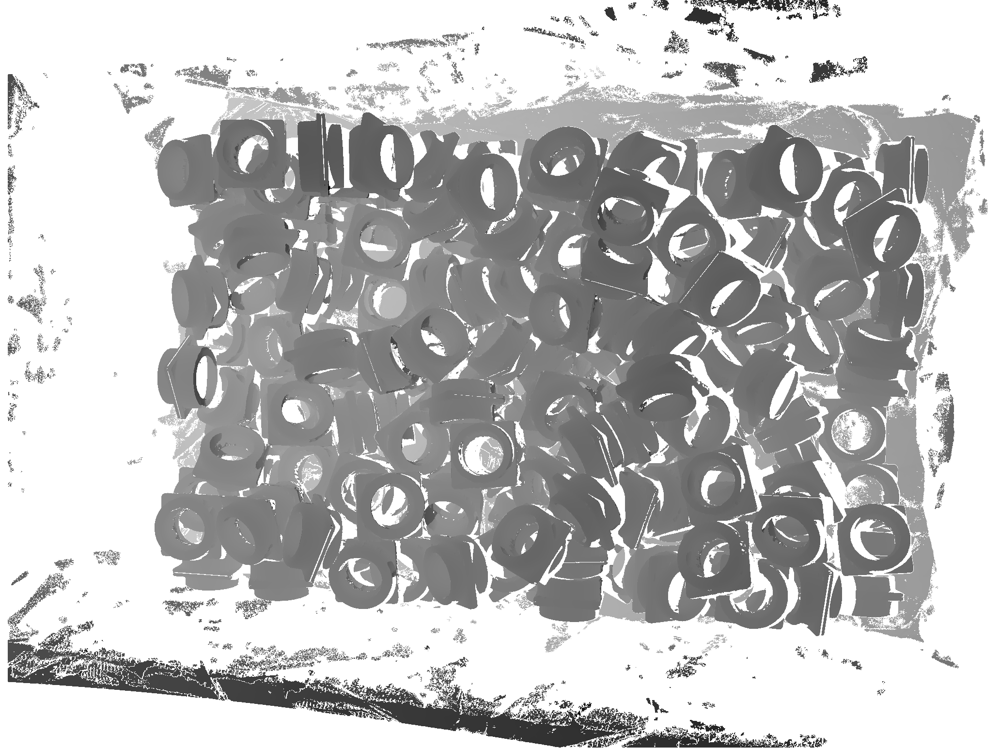
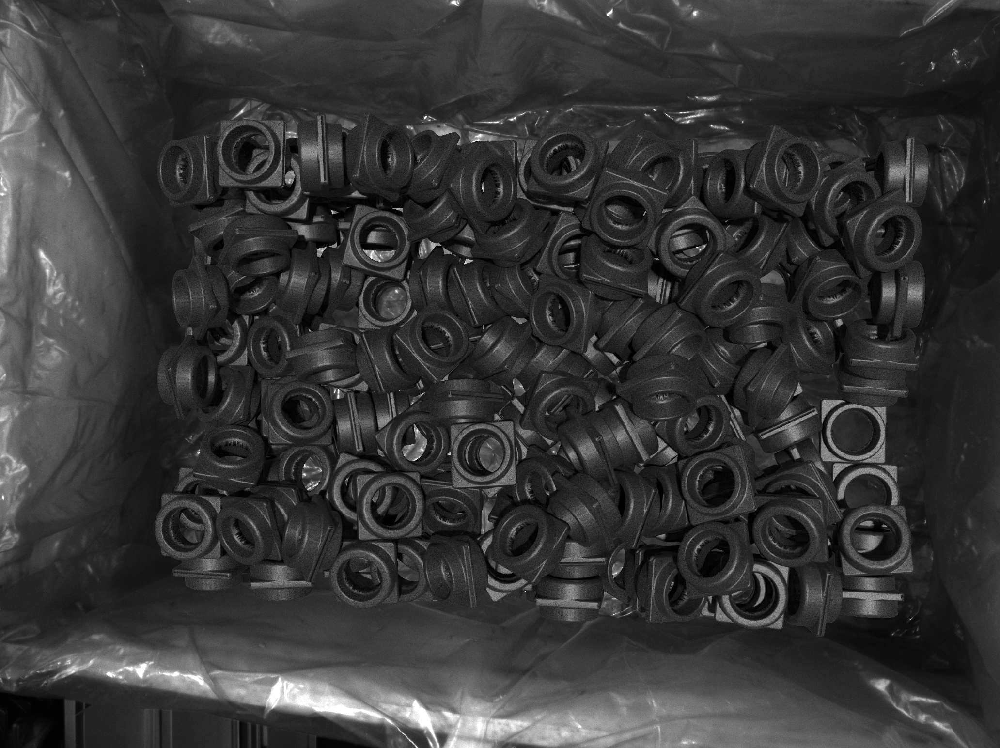
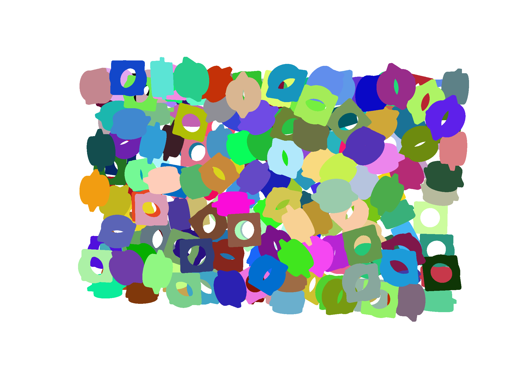
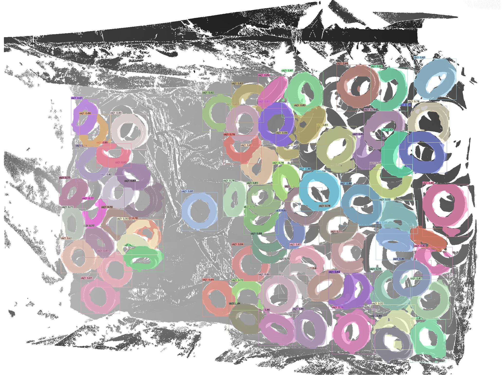
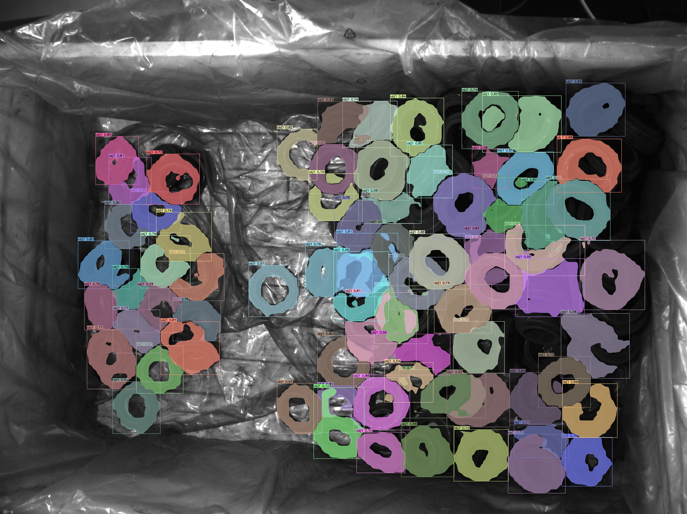
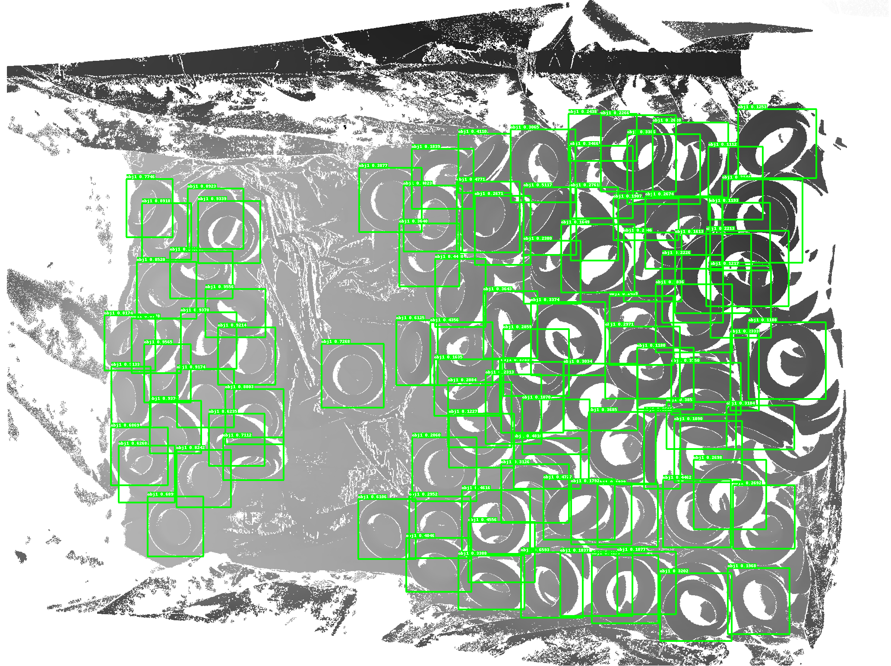
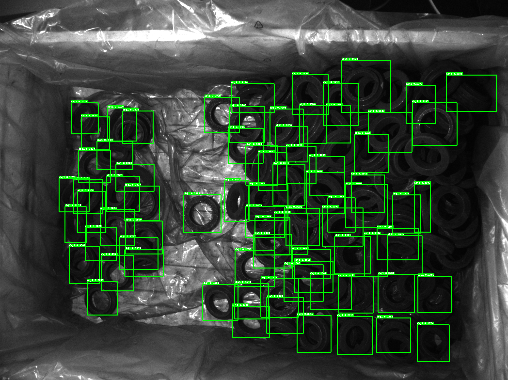

Close the Sim2real Gap via Physically-based Structured Light Synthetic Data Simulation
Keywords: Structured-light Simulation; Data Generation for Perception; Sim2Real
Github
Video
Physically-based Scene Generation
Pipeline of Synthetic Data Generation and 3D Reconstruction
Physically-based Scene Generation
Projection Simulation
Synthetic Data

Synthetic Depth Image

Synthetic RGB Image

Segmentation Label Map
Inference Results

Depth Image

RGB Image

Depth Image

RGB Image
Dataset
The dataset will be available soon.Bibtex
@INPROCEEDINGS{inproceedings,
author={author},
booktitle={},
title={title},
year={2022},
volume={},
number={},
pages={1-8},
doi={doi}}
}
author={author},
booktitle={},
title={title},
year={2022},
volume={},
number={},
pages={1-8},
doi={doi}}
}